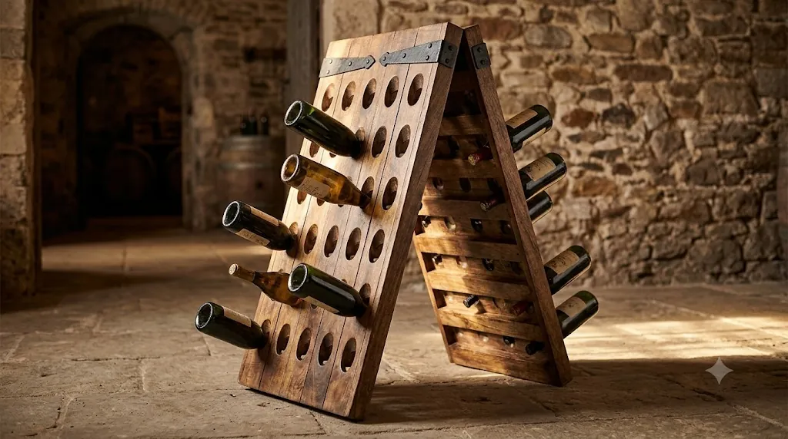

Cellar Ceiling Iron Hanging Glass Rack (24-Stem)
Masterfully crafted in Jodhpur for high-volume international export, the Cellar Ceiling Iron Hanging Glass Rack (24-Stem) reflects Cellar Bar sensibilities engineered for retail success at Crate & Barrel, Wayfair. Features Black iron grid suspended by 4 corner ceiling chains holding 24 large wine stems. Constructed exclusively from certified sustainable timber kiln-dried to strict 8–10% moisture equilibrium to prevent warping across diverse North American and European climates. Accompanied by electrostatically coated, corrosion-resistant ironwork with seamless hand-welded joins. Every piece is individually wrapped, buffered with high-density EPS edge guards, and boxed in an ISTA-1A drop-tested 5-ply export master carton (unit volume: 0.025 CBM). Fully compliant with the US Lacey Act, VRIKSH timber legality verification, and EUDR deforestation due diligence regulations.
| Material & construction | Black iron grid suspended by 4 corner ceiling chains holding 24 large wine stems |
|---|---|
| Dimensions | 30" x 16" x 3" / 76 x 41 x 8 cm |
| Carton volume | 0.025 CBM / unit |
| Minimum order | 25 Pcs |
| Lead time | 45–60 Days (FOB Mundra) |
| Western retail benchmark | $85 – $120 |
| Style | Cellar Bar |
| Indicative HS heading | 9403.60 — Other wooden furniture |
| Typical buyers | Crate & Barrel, Wayfair |
Indicative HS heading only — your customs broker confirms final classification. Kiln-dried 8–10% moisture, ISPM-15 dunnage, VRIKSH / Lacey / EUDR paperwork on request.